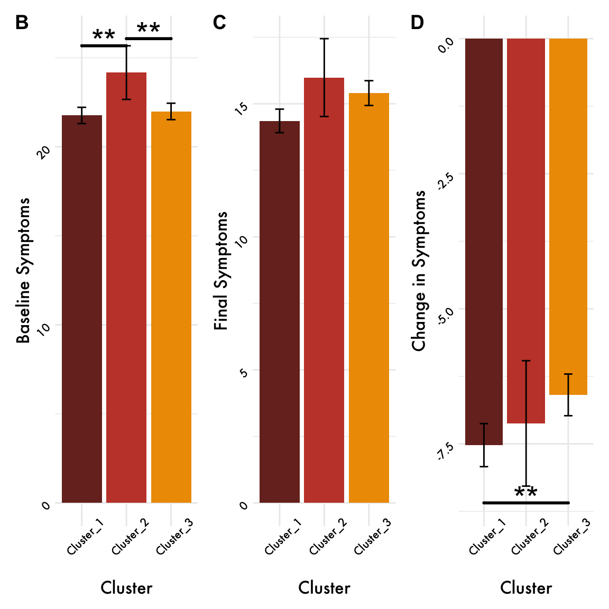
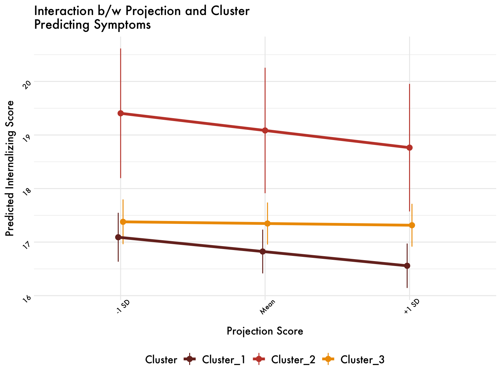
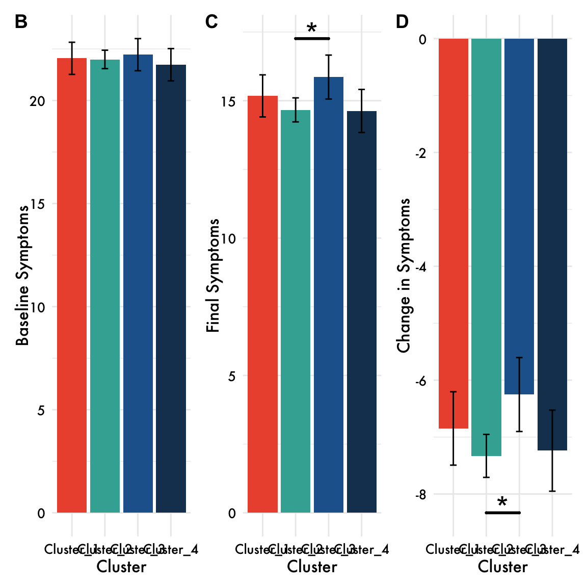

I-Projection Results
Steven
2025-09-19
Overview
Under the hood
What this analysis does
Loads a RoBERTa (a LLM) to embed participant text into high-dimensional vectors.
Defines psychological axes (valence, ability) using controlled “I am” / “I feel” statements; each axis is the normalized difference between mean embeddings of positive vs. negative statements.
This allows us to capture the psychological dimensions of interest in the embedding space (i.e., good-bad and able-unable).
Projects target words (e.g., I, me, my) onto these axes by computing the dot product between each word’s embedding and the axis vector, capturing how strongly that word aligns with a psychological dimension.
Aggregates these projections at the text level to create text-level measures of valence and ability projections for each participant, which we can then use for down-stream analyses.
Do projections move closer to the positive end of the axis over time?
Note. Data are aggregated at the assessment level and coefficients are unstandardized.First person sing. = means of I, me, and my projections for each participant.
first_person_sing_valence_combined
first_person_sing_valence_combined individual variation

first_person_sing_valence_combined spline fit

First-person sing. able projections (am, feel, & combined)
Note. Data are aggregated at the assessment level and coefficients are unstandardized.First person sing. = means of I, me, and my projections for each participant.
first_person_sing_ability_combined
first_person_sing_ability_combined individual variation

first_person_sing_ability_combined spline fit

Do our projection measures predict changes in internalizing symptoms over time?
Results are condensed to be for the first-person singular valence and ability projections only (combined).
Valence Projection
Ability Projection
Are these predictions robust to other linguisitic features?
Results are condensed to be for the first-person singular valence and ability projections only (combined).
% words
Controlling for freq. of words used to construct our axes.
Valence Projections
Ability Projections
Sentiment and Total WC
Controlling for sentiment scores, emotion words (LIWC), and total word count.
Valence Projections
Ability projections
Cluster based on Projection Scores
Good-bad
Map Change over time in each cluster
# Standardization method: pseudo
Parameter | Std. Coef. | 95% CI
----------------------------------------------
(Intercept) | 0.00 | [0.00, 0.00]
daysSinceFirstText | 0.02 | [0.01, 0.03]# Standardization method: pseudo
Parameter | Std. Coef. | 95% CI
------------------------------------------------
(Intercept) | 0.00 | [ 0.00, 0.00]
daysSinceFirstText | -0.03 | [-0.05, -0.02]# Standardization method: pseudo
Parameter | Std. Coef. | 95% CI
-----------------------------------------------
(Intercept) | 0.00 | [ 0.00, 0.00]
daysSinceFirstText | 2.80e-03 | [ 0.00, 0.01]Differences in Symptoms Across Clusters
Controlling for baseline symptoms
Plot
Do clusters moderate?
model = lmer(Internalizing ~ first_person_sing_valence_combined * clusterComb + daysSinceFirstText + (1|room_id), data = data_cluster)
Table
Plot
All plots together
Able-Unable
Map Change over time in each cluster
# Standardization method: pseudo
Parameter | Std. Coef. | 95% CI
----------------------------------------------
(Intercept) | 0.00 | [0.00, 0.00]
daysSinceFirstText | 0.05 | [0.04, 0.06]# Standardization method: pseudo
Parameter | Std. Coef. | 95% CI
----------------------------------------------
(Intercept) | 0.00 | [0.00, 0.00]
daysSinceFirstText | 0.05 | [0.05, 0.06]# Standardization method: pseudo
Parameter | Std. Coef. | 95% CI
----------------------------------------------
(Intercept) | 0.00 | [0.00, 0.00]
daysSinceFirstText | 0.02 | [0.01, 0.03]# Standardization method: pseudo
Parameter | Std. Coef. | 95% CI
----------------------------------------------
(Intercept) | 0.00 | [0.00, 0.00]
daysSinceFirstText | 0.02 | [0.01, 0.03]Differences in Symptoms Across Clusters
Plot
Do clusters moderate?
Table
Plot

All plots together